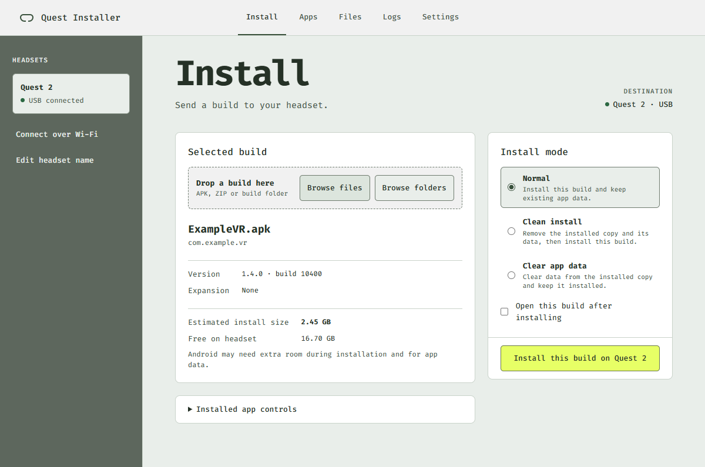
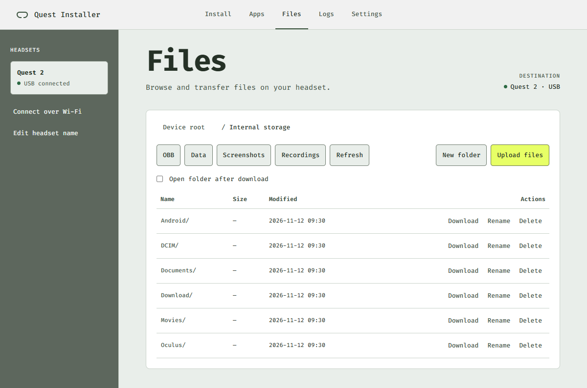

Install builds
on Meta Quest.
Send a build from your PC or Mac. See how much space it needs, follow the transfer, and manage what’s on the headset.
Download Quest InstallerWindows x64 · Apple Silicon · Intel Mac

Quick start
Connect your Quest
Enable Developer Mode, plug in your headset over USB, and accept the USB debugging prompt inside the headset.
Choose a build
Drop an APK, ZIP, or build folder into Install. Check the destination headset and available space.
Install and test
Choose Normal to keep app data or Clean install to remove the old copy and its data first. Start the install and watch the transfer.
On Mac, the installer may require first-launch approval in System Settings → Privacy & Security. Apple’s instructions
On the headset
- Apps
- Find installed apps by package ID. Uninstall removes the app, its local data, and expansion files. Quest screenshots and recordings stay in their capture folders.
- Files
- Browse and transfer files in Internal storage. Open Device root to see the folders your headset allows you to read.
- Logs
- Open the selected build on your Quest, then start the live log in Logs. Save the output to share with your team.
